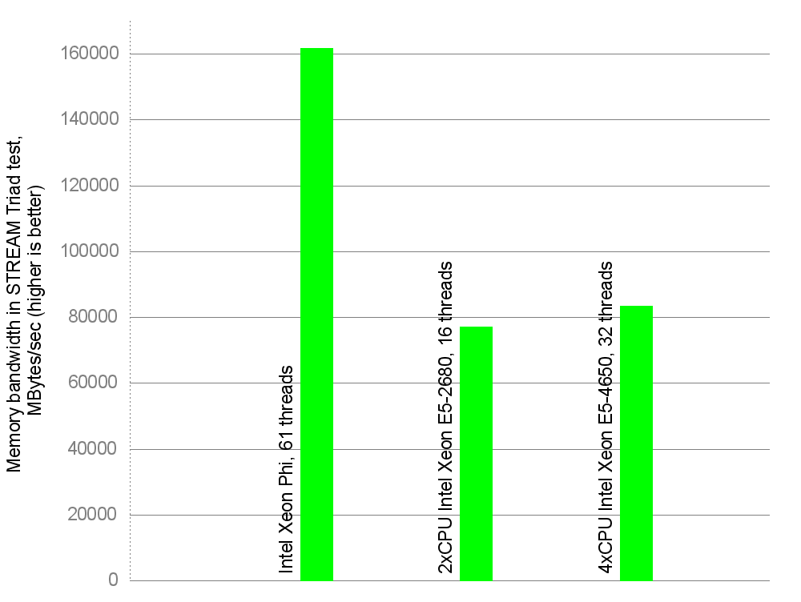
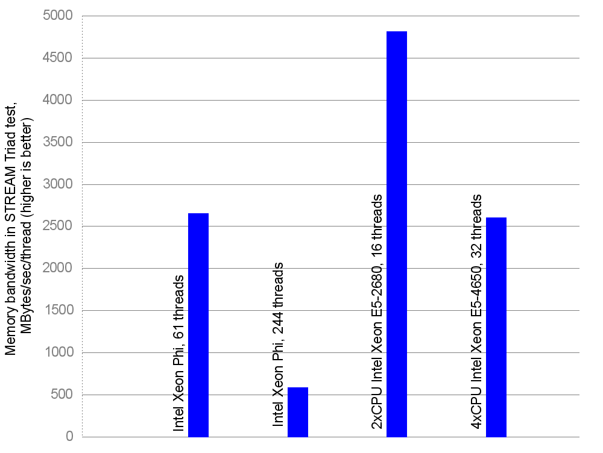
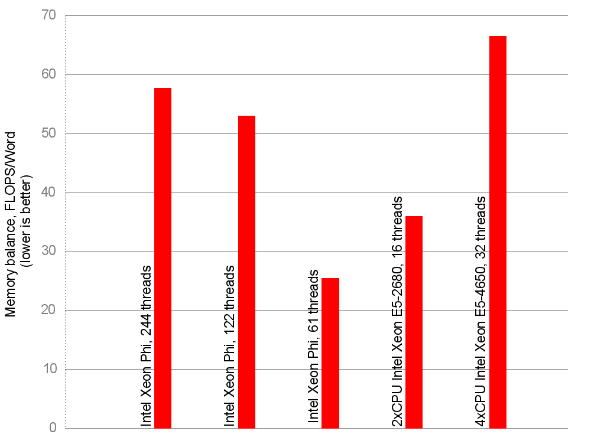

Intel Xeon Phi的内存带宽
这篇文章翻译自这里
John D. McCalpin博士，非正式地称为“带宽博士“， 因为他发明了STREAM memory bandwidth benchmark，使用dell生产的Xeon phi和两个Xeon的服务器，三个设备使用的是在TACC的Stampede电脑。
Intel设备的总带宽
Intel Xeon Phi实现的内存带宽大致161829 MB/s- 出现在图上的是使用2xCPU和4X CPU 基于Intel Xeon作为计算节点的的服务器。首先，每个设备总内存带宽：每个Xeon phi，或每个基于Xeon的服务器。

Intel设备每个线程的带宽
在试验中，STREAM使用的OpenMP线程数等于计算设备上的核心数。可以看出，英特尔至强融核主板提供了大量的带宽给它的核心。高端双路和四路服务器在总带宽上落后，四插槽服务器仅比其双插槽服务器略好。
现在用总带宽除以计算设备上运行的线程数，可以得出一个线程可以多少使用的带宽：

为了充分利用Intel Xeon Phi浮点计算能力，需要每个内核启动4线程。下面是引用英特尔的James Reinders的一句话：
The Intel Xeon Phi coprocessor offers four hardware threads per core with sufficient memory capabilities and floating-point capabilities to make it generally impossible for a single thread per core to approach either limit. Highly tuned kernels of code may reach saturation with two threads, but generally applications need a minimum of three or four active threads per core to access all that the coprocessor can offer.
因此在实际中，对 floating-point-limited的应用开启61 x 4 =244个线程。但随着244线程STREAM运行显示比61线程的总带宽少12％：
6.The best results with the compiler flags above were obtained with one thread per core. Using 2, 3, or 4 threads per core decreased the Triad bandwidth by approximately 4%, 8%, and 12%, respectively.
因此，考虑到对于每个线程的带宽，双路服务器现在是最好。
STREAM是用来衡量一个具体的方面 - 内存带宽，因此只“模拟”了一类应用：那些读取大量的内存，一个word一个word，仅对它们做一些很少的浮点运算，然后写回结果。还有其他类型的访存模式：例如，当程序中的工作集大小可以放在cache中时，并对cache中做许多迭代浮点运算，那么访存带宽是不那么重要。
在第二副曲线图中，我们还没有考虑到设备浮点计算能力。Intel Xeon Phi具有较低的时钟频率，但每个时钟周期可以做更多的浮点运算。
峰值计算能力的计算和machine balance
我们来计算一下设备峰值浮点运算速度。对于Intel Xeon Phi，还有就是产品页面上的话：
2.Claim based on calculated theoretical peak double precision performance capability for a single coprocessor. 16 DP FLOPS/clock/core x 60 cores x 1.053GHz = 1.0108 TeraFlop/s.
他们是如何达到 16 FLOPS/cycle？芯片内的SIMD unit是512 bit，所以它可容纳8个双精度（64位）的浮点数。Intel Xeon Phi支持乘加（FMA）指令，其中一个单指令执行一个乘法和一个加法操作，共两个浮点运算，如d←d x a + b（取寄存器d的数，乘以a，加b，并将返回结果保存在d）。例如，指令VFMADD132PD（或类似的）从该指令集架构参考手册（page 201 of 725）。英特尔的George Chrysos 确认了这一点。这样，每个cycle内，8个数进行2次浮点运算，因此2x 8 =16 FLOPS/cycle。
因此，如果你的代码对512 bit的浮点向量做一次乘法和一次加法（而不是两个加法，或两次乘法，或者别的什么，那么你可能会接近峰值性能。
现在，我们需要分别计算双路和四路戴尔服务器的峰值浮点计算能力，这是基于Intel Xeon E5-2680和E5-4650处理器（均为8核，2.7GHz）。两个CPU都支持高级矢量扩展（AVX）。向量位宽是256 bit，这样可以容纳4个双精度浮点数。使用如上述的FMA指令，在一个周期内可以实现4加法和4次乘法，总共8 FLOPS/cycle。然后我们需要的乘以2.7 GHz的时钟频率，在乘以8个内核，并且通过插槽的数量。对双路服务器有345.6 GFLOPS，对双路服务器有691.2 GFLOPS GFLOPS。
最后，我们知道每个设备的总内存带宽，以及每个设备的峰值浮点速度。有一个指标叫machine balance。它试图将并行计算机的各种复杂参数，其中许多都表现为非线性关系，转化为一个数字。当然，这种方法不精确。但它允许架构之间的粗糙比较。
要计算machine balance，你需要将总内存带宽GWords/s除以峰值浮点运算速度GFLOPS。结果用 FLOPS/ Word进行测量，简单地说，它表示在内存到达下一个字来在处理之前，可以有多少浮点运算。这是一个很大的简化。高数字（例如，30 FLOPS/Word）是一个不好的迹象，它们表明unbalanced machines：那就是，对每个word，在下一个word到来之前机器可以进行30次浮点运算。如果你的程序不需要对来自内存中的一个word进行30次浮点运算，CPU就不得不空闲，没有任何工作，直到下一个word进入，因为对于CPU内存访问速度太慢，因此，机器被称为unbalanced。 （同样，它是计算机如何工作的一个非常粗略的估计，因为一次cpu不可能一次只从内存中取出一个word，而是一个高速缓存行，等等）
在这方面，相比于过去的矢量超级计算机，今天的许多机器都是unbalanced的。在现代机器高速缓冲存储器尝试缓解该问题。所以，让我们计算这三个计算设备的平衡性。对于Intel Xeon Phi会有三种情况- 61线程（每核1个线程），122线（每核2线程），并为244线（每核心4线程）。
需要注意的是“一个线程只能两个时钟周期发出射一条向量指令”，因此，你每个核至少需要两个线程来达到最大指令发射效率。此外，“使用每个核3-4线程不增加最高发射指令效率，但往往有助于减少延迟。”
因此，要充分利用英特尔至强融核的浮点计算能力，你有可能使用每核心2个或4个线程，因此从每个设备开启122或244线程，但对带宽受限的应用程序，为了使一个线程有更多的内存带宽，可以尝试每核1个线程。 （参见在帖子的末尾更新1）。
Intel Xeon Phi
244线程：244线程的总带宽：142410 MB/s（161829减12％），或17.8GWords/s。61核的峰值浮点计算能力：16 DP FLOPS/cycle/corex 61 cores x 1053GHz=1027,7 GFLOPS。Machine balance：57.7 FLOPS/word。
122线程：122线程的总带宽：155356 MB/s（161829减4％），或者19.4 GWords/s。峰值浮点计算力：相同。Machine balance：53 FLOPS/Word。
61线程：61线程的总带宽: 161829 MB/s，或20.2 GWords/s。峰值浮点计算力：上述峰值的一半，即，513.9 GFLOPS，因为，如上所述，“一个线程只能每两个周期发射一条矢量指令”。Machine balance：25.4 FLOPS/word。
双路Intel Xeon的服务器
总带宽：77010 MB/s，或9.6GWords/s。峰值浮点计算力：345.6 GFLOPS。Machine balance：36 FLOPS/Word。
四路Intel Xeon的服务器
总带宽：83381 MB/s，或10.4GWord/s。峰值浮点性能：691.2 GFLOPS（见上文）。Machine balance：66.5 FLOPS/Word。
下面是相应的图表（越低越好）：

不要忘记从STREAM得到的图只模拟了一种内存访问模式。如果你的程序是缓存友好的，你会从高速缓存的内存带宽获益，这对于英特尔至强融核比L2和L1高速缓存分别是主内存带宽的7倍和15倍（在此演示文稿参见图14）。
Dr. McCalpin的这篇博客帖子，还对比了Intel Xeon Phi的机器和NVIDIA’a GPU加速器的machine balance。
感谢远阅读本文！要下载图形的源数据，请点击这里。
更新1 Dr. McCalpin指出，事实上，当他们使用每个Intel Xeon phi 的核心1，2或3个线程时，应用程序运行速度更快，而不是每核心最大数量4线程。